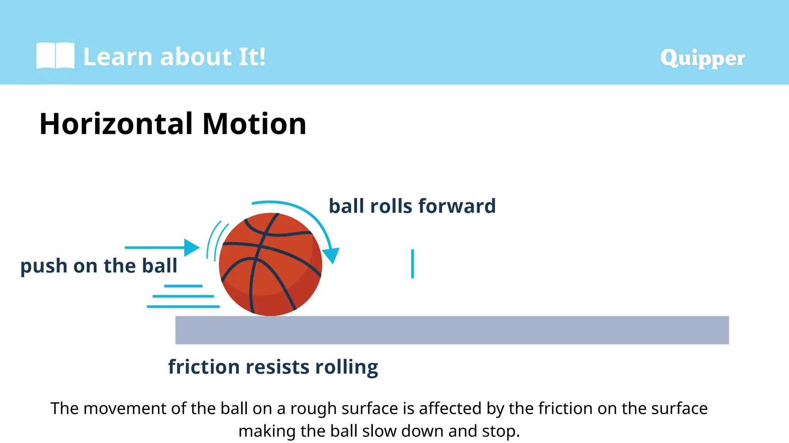
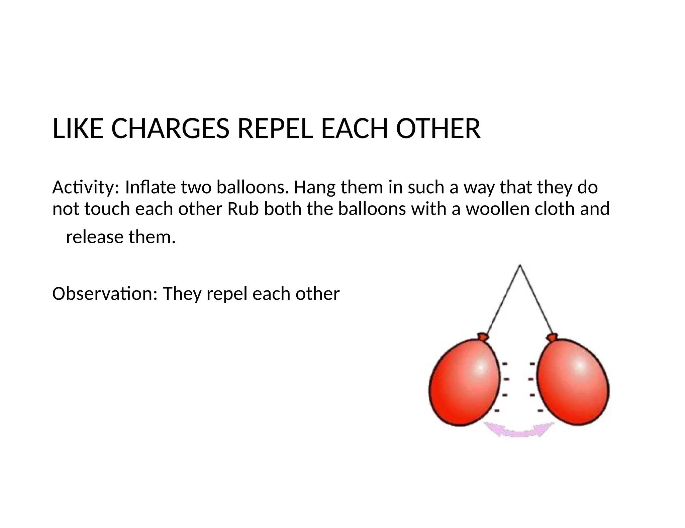
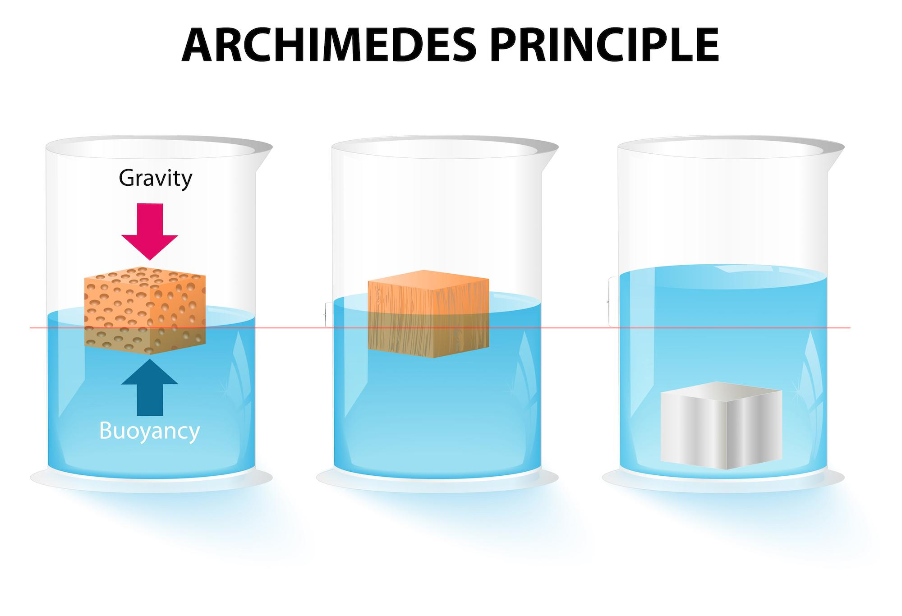
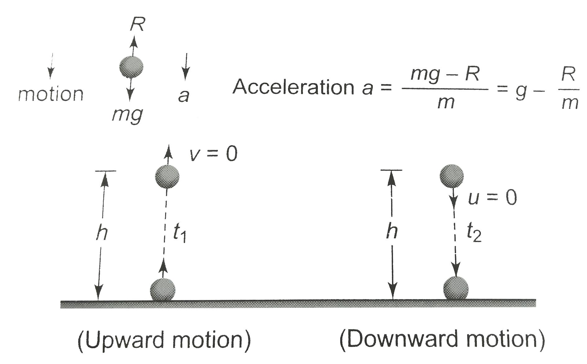
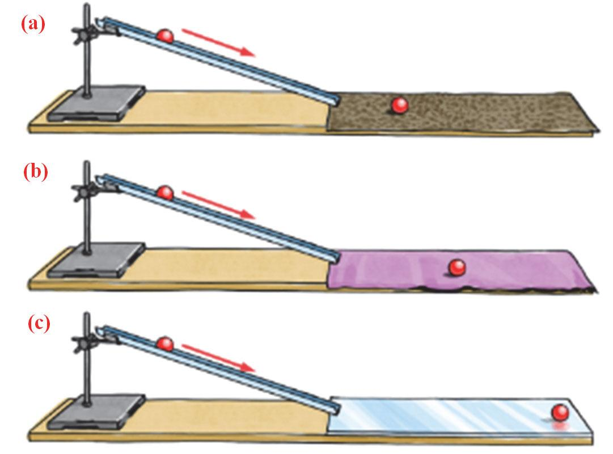
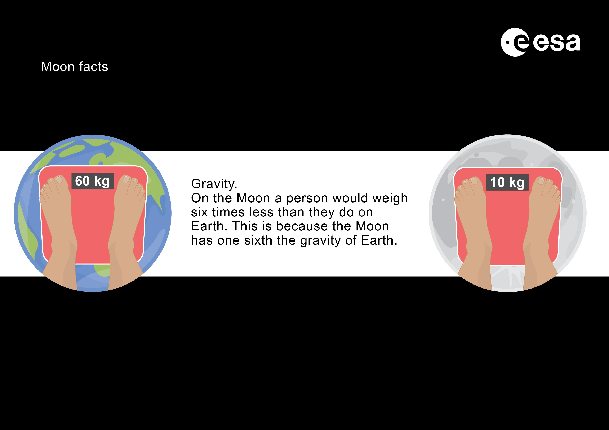
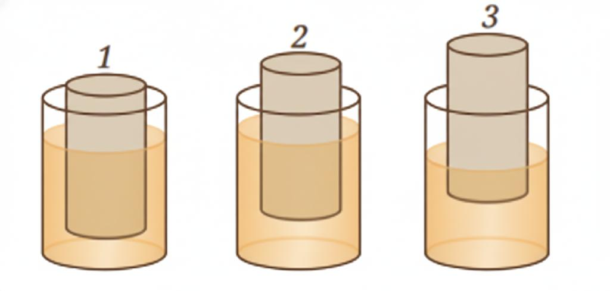

Class 8Chapter 5: Exploring Forces – Questions and Answers
1. Match the Following
Question 1. Match items in Column A with the items in Column B.
| Column A (Type of Force) | Column B (Example) |
|---|---|
| (i) Muscular force | (b) A child lifting a school bag |
| (ii) Magnetic force | (e) A compass needle pointing North |
| (iii) Frictional force | (a) A cricket ball stopping just before touching the boundary line |
| (iv) Electrostatic force | (d) Balloon rubbed on woollen cloth attracting hair strands |
| (v) Gravitational force | (c) A fruit falling from a tree |
Answer: Correct Matching
- (i) – (b) Muscular force – A child lifting a school bag.
- (ii) – (e) Magnetic force – A compass needle pointing North.
- (iii) – (a) Frictional force – A cricket ball stopping before the boundary line.
- (iv) – (d) Electrostatic force – A rubbed balloon attracting hair strands.
- (v) – (c) Gravitational force – A fruit falling from a tree.
2. True or False
Question 2. State whether the following statements are True or False.
(i) A force is always required to change the speed of motion of an object.
Answer: True.
A force is needed to change the speed of an object. It can make an object move faster or slower.
(ii) Due to friction, the speed of the ball rolling on a flat ground increases.
Answer: False.
Friction acts opposite to the direction of motion. It slows down the ball and finally stops it.

(iii) There is no force between two charged objects placed at a small distance apart.
Answer: False.
Two charged objects exert an electrostatic force on each other. They may attract or repel each other.
3. Electrostatic Force Between Two Balloons
Question 3. Two balloons rubbed with a woollen cloth are brought near each other. What would happen and why?
Answer:
Both balloons get the same type of electric charge when rubbed with a woollen cloth.
Like charges repel each other. Therefore, the two balloons will move away from each other.

4. Why Do Some Objects Sink and Others Float?
Question 4. When you drop a coin in a glass of water, it sinks, but when you place a bigger wooden block in water, it floats. Explain.
Answer:
A coin sinks because its density is greater than the density of water.
A wooden block floats because its density is less than the density of water.
Water applies an upward force called buoyant force on objects placed in it.
Therefore, the wooden block floats while the coin sinks.

5. Forces Acting on a Ball Thrown Upwards
Question 5. If a ball is thrown upwards, it slows down, stops momentarily, and then falls back to the ground. Name the forces acting on the ball and specify their directions.
(i) During its upward motion
Answer:
- Gravitational force acts downwards.
- Air resistance also acts downwards because it opposes the upward motion of the ball.
(ii) During its downward motion
Answer:
- Gravitational force acts downwards.
- Air resistance acts upwards because it opposes the downward motion.
(iii) At its topmost position
Answer:
- The speed of the ball becomes zero for a moment.
- Gravitational force continues to act downwards.
- Air resistance is momentarily zero because the ball is momentarily at rest.

6. Effect of Friction on a Moving Ball
Question 6. A ball is released from the point P and moves along an inclined plane and then along a horizontal surface as shown in Fig. 5.16. It comes to stop at the point A on the horizontal surface. Think of a way so that when the ball is released from the same point P, it stops:
(i) Before the point A
Answer:
We should increase friction on the horizontal surface by making it rough. The greater friction will stop the ball earlier, before point A.
(ii) After crossing the point A
Answer:
We should reduce friction by making the horizontal surface smoother or applying a suitable lubricant. The ball will travel a longer distance before stopping.

7. Why Do We Slip on Smooth Surfaces?
Question 7. Why do we sometimes slip on smooth surfaces like ice or polished floors? Explain.
Answer:
We sometimes slip on smooth surfaces because they provide very little friction between our feet and the ground.
Friction helps us walk without slipping. When friction is very low, our feet cannot get a proper grip on the surface.
Therefore, we may slip and fall.
8. Force and Non-Uniform Motion
Question 8. Is any force being applied to an object in a non-uniform motion?
Answer:
Yes, a force is applied to an object in non-uniform motion.
Non-uniform motion means that the speed or direction of an object changes with time.
A force is needed to change the speed or direction of motion.
Example: A moving car slowing down when brakes are applied.

9. Weight of an Object on the Moon
Question 9. The weight of an object on the Moon becomes one-sixth of its weight on the Earth. What causes this change? Does the mass of the object also become one-sixth of its mass on the Earth?
Answer:
The weight of an object depends on gravitational force.
The Moon's gravitational pull is about one-sixth of the Earth's gravitational pull. Therefore, an object weighs one-sixth as much on the Moon as it does on Earth.
Does its mass change?
No. The mass of an object remains the same everywhere because the amount of matter in the object does not change.
Example:
- Weight on Earth = 60 N
- Weight on Moon = 10 N
- Mass remains unchanged.

10. Floating Objects and Their Weights
Question 10. Three objects 1, 2, and 3 of the same size and shape but made of different materials are placed in the water. They dip to different depths as shown in Fig. 5.17. If the weights of the three objects 1, 2, and 3 are W1, W2, and W3, respectively, then choose the correct option.
- W1 = W2 = W3
- W1 > W2 > W3
- W2 > W3 > W1
- W3 > W1 > W2
Answer: Correct option (ii) – W1 > W2 > W3.
Explanation:
- Object 1 is immersed deepest in water.
- Object 2 is immersed less deeply than object 1.
- Object 3 is immersed the least.
For floating objects, a heavier object of the same shape and size must displace more water.
Therefore:
W1 > W2 > W3

11. Important Terms to Remember
| Term | Simple Meaning |
|---|---|
| Muscular Force | Force applied by our muscles. |
| Magnetic Force | Force exerted by a magnet. |
| Frictional Force | Force that opposes motion between surfaces. |
| Electrostatic Force | Force between electrically charged objects. |
| Gravitational Force | Force by which the Earth attracts objects. |
| Buoyant Force | Upward force exerted by a liquid on an object. |
| Density | Mass per unit volume of a substance. |
| Non-Uniform Motion | Motion in which speed or direction changes. |
| Weight | Force with which gravity attracts an object. |
| Mass | Amount of matter in an object. |
12. Quick Revision – Answer Key
| Question | Answer |
|---|---|
| Q1 | (i)-(b), (ii)-(e), (iii)-(a), (iv)-(d), (v)-(c) |
| Q2 (i) | True |
| Q2 (ii) | False |
| Q2 (iii) | False |
| Q3 | Balloons repel each other. |
| Q4 | Coin sinks; wooden block floats. |
| Q5 | Gravity acts downwards; air resistance opposes motion. |
| Q6 (i) | Increase friction. |
| Q6 (ii) | Reduce friction. |
| Q7 | Low friction causes slipping. |
| Q8 | Yes, a force is required to change velocity. |
| Q9 | Moon's gravity is one-sixth; mass remains unchanged. |
| Q10 | Option (ii): W1 > W2 > W3. |
13. Chapter Summary
Force is a push or pull acting on an object. Different types of forces include muscular force, magnetic force, frictional force, electrostatic force and gravitational force.
Force can change the speed, direction or shape of an object. Friction opposes motion, while gravity pulls objects towards the Earth.
Electrostatic force acts between charged objects. Buoyant force acts upwards on objects placed in liquids. The weight of an object changes with gravity, but its mass remains the same everywhere.
Message of the Chapter
Forces play an important role in our daily lives. Understanding different types of forces helps us explain the motion and behaviour of objects around us.
MCQ Quiz
अध्याय के वस्तुनिष्ठ प्रश्नों का अभ्यास करें।
MCQ Quiz शुरू करेंPDF Notes
इस अध्याय के नोट्स PDF में पढ़ें या डाउनलोड करें।
📄 View PDF ⬇️ Download PDF